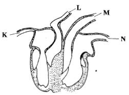
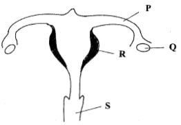
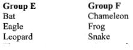
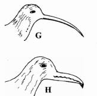
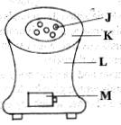
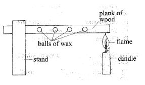
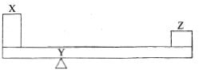

1. Which one of the following characteristics can be used to identify molars? Presence of
2. The following are functions of the trachea EXCEPT
3. Which one of the following parts of the alimentary canal is correctly matched to its function?
4. The diagram below represents the structure of a human heart.

5. The diagram below represents a female reproductive system.

6. Which one of the following is a health effect of drug abuse?
7. The first stage of HIV infection is known as
8. Which one of the following vaccines are correctly matched to the age when they are first administered? BCG, Tetanus, Polio, Measles respectively;
9. Which one of the following diseases can be prevented by draining stagnant water around homesteads?
10. A patient was instructed by a doctor to take two tablets of medicine every six hours. However, the patient forgot to take at noon and on remembering took four tablets at the same time. The patient should have;
11. Which one of the following pairs consists only of illegal drugs in Kenya?
12. Which one of the following weeds.has green-purple leaves?
13. Which one of the following pairs of plants stores food in the roots?
14. Which one of the following statements on interdependence between plants is NOT TRUE? Some plants
15. Which one of the following crop pests is correctly matched to the part of the plant it damages?
16. Which one of the following groups of plants consists of ONLY flowering plants?
17. Which one of the following diagrams represents the shape of the new moon?
18. In the solar system, Jupiter is found between
19. Pupils observed and classified certain animals into two groups E and F as shown below?

20. Standard five pupils observed a goat tied on a post to graze in the field. This method of grazing is classified as?
21. The diagrams below represents beaks of certain birds.

22. Which one of the following methods of controlling animal parasites is correctly matched to the parasite controlled?
23. Pupils gave the following statements about water.
(i) Lathers easily
(ii) Has a pleasant taste
(iii) Has mineral salts
(iv) Good for cleaning
24. Which one of the following pairs of diseases is as a result of drinking polluted water?
25. In which one of the following practices is water recycled?
26. Which one of the following pairs of signs and symptoms is for cholera?
27. Large furrows in the soil indicate?
28. Which one of the following statements is TRUE about clay soil?
29. Which one of the following soil conservation measures conserves soil in the same way as mulching?
30. The following statements are true about breast milk EXCEPT
31. A child who appears old with a wrinkled face is also likely to?
32. Which one of the following groups consists ONLY of foods that will provide energy to the body?
33. The diagram below illustrates a jiko.

34. Which one of the following sources of energy is exhaustible?
35. Which one of the following is an efficient way of using energy?
36. The following can produce electricity ?
37. A card with the word TEACHER written on it was placed in front of a mirror. Which three of the letters did not change in appearance?
38. Which one of the following materials works in the same way as frosted glass?
39. The property of light used in the working of a lamp in a room is that light
40. In which one of the following processes is carbon dioxide used?
41. After using a magnet, the next stage of separating a mixture of salt, sand and iron fillings is to?
42. The diagram below shows a set up used by pupils to demonstrate a certain property of matter.

43. Which one of the following groups of materials are correctly matched to magnetic and non magnetic respectively?
44. Which one of the following machines works in the same way as a staircase?
45. Which one of the following practices will help to control soil pollution?
46. Which one of the following pairs CORRECTLY represents living and non-living components of the environment? (Living and non-living repectively)
47. The following are some ways by which soil is conserved.
(i) Reducing speed of surface runoff
(ii) Trapping soil
(iii) Reducing evaporation of soil water
(iv) Reducing impact of rain drops.
48. Which one of the following practices would help in maintaining strong teeth in humans?
49. The diagram below represents a lever in use.

50. In which one of the following is friction reduced by streamlining?